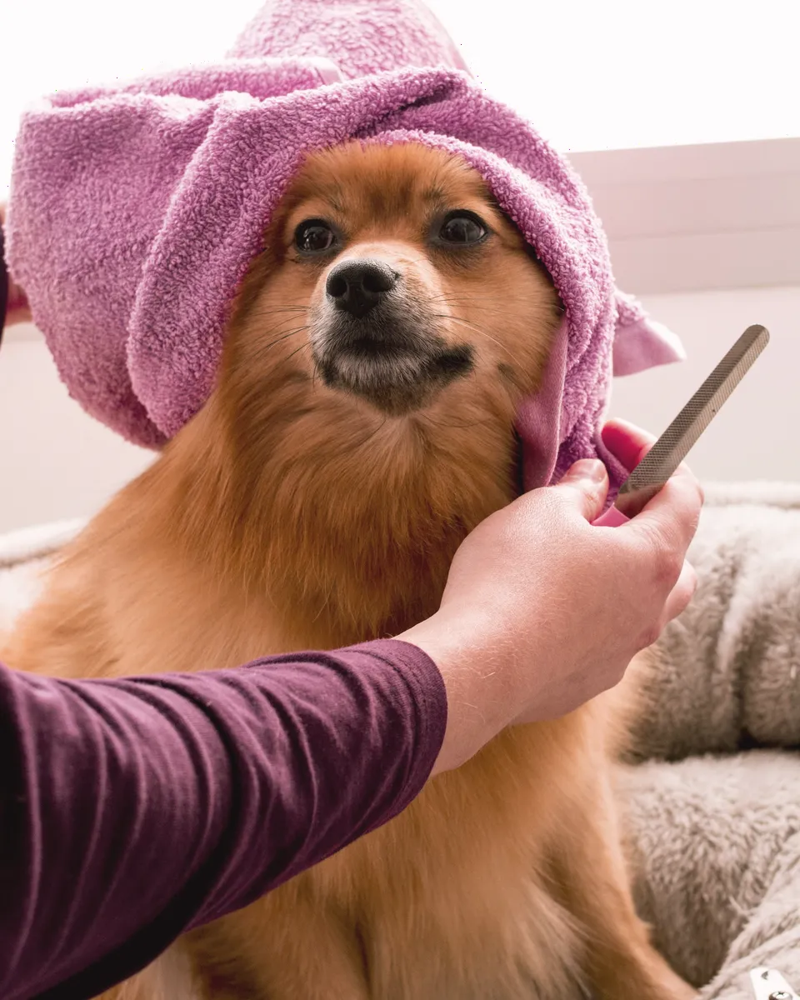
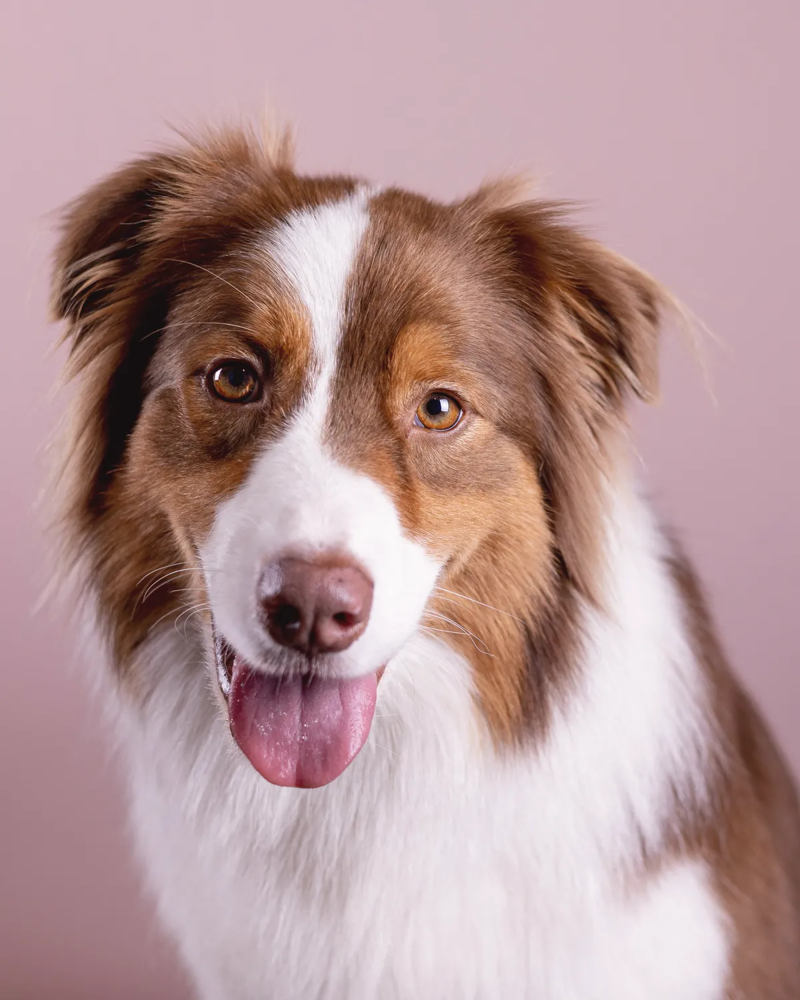
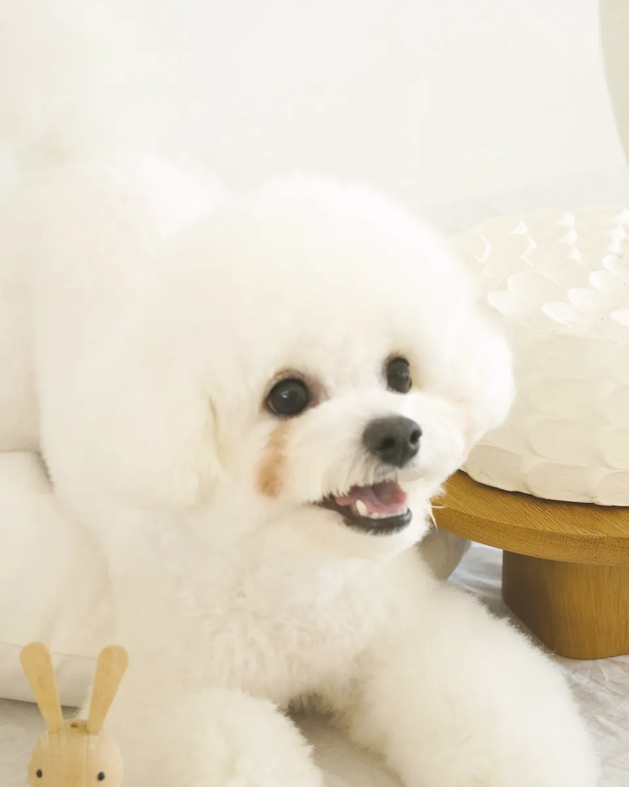
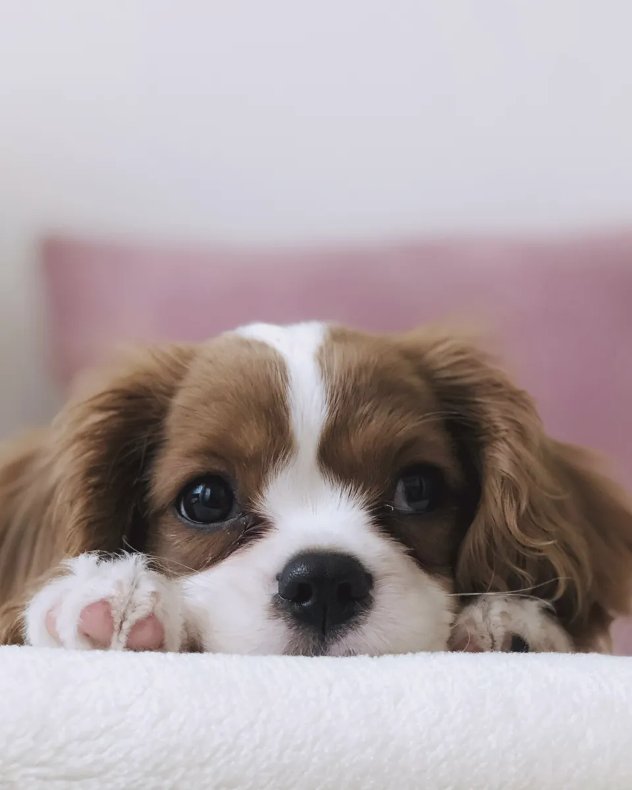

Banho
Com produtos de qualidade, para o pet voltar limpo e cheiroso por mais tempo.
“Os produtos utilizados são de qualidade, deixando nossos bichinhos muito mais tempo cheirosos.” Julia A.
Demonstração feita para a Estética Animal Rosa. Ainda não é o site oficial.
Banho e tosa no São José, Canoas
Banho, tosa e look pós-banho com o carinho da tia Grazi. Se não der para trazer, a gente busca e leva o seu pet.
4,9 no Google 47 avaliações
Quem já leva o pet
“Mesmo morando em outra cidade faço questão deles continuarem sendo atendidos pela Grazi. Já são anos de atendimento e super recomendo.”
Simoni F.
“A Grazy é uma pessoa muito atenciosa e cuidadosa com os animais. Minha filha canina Mary Jane fica super tranquila na pet.”
Ana Claudia G.
“A Lilica e o Fredinho amam tomar aquele banho gostoso na pet da tia Grazi, pois lá encontram carinho e atenção.”
Elaine M.
“Confio muito em deixá-la lá, sempre volta muito limpa e cheirosa.”
Roberto M.
“Minha Cristal ama. Super mimada, bem atendida, cuidado e carinho.”
Rosana R.
“Gostei da estética animal desde o primeiro banho!”
Camila A.
Serviços
Tudo combinado pelo WhatsApp, de terça a sábado, no tempo do seu pet.

Com produtos de qualidade, para o pet voltar limpo e cheiroso por mais tempo.
“Os produtos utilizados são de qualidade, deixando nossos bichinhos muito mais tempo cheirosos.” Julia A.

Feita com capricho e paciência, do jeito que combina com o seu pet.
“Muito atenciosa, caprichosa, com preço justo.” Lu R.
O pet sai do banho arrumado, com um toque a mais.
“…os looks pós banho são os melhores!” Natalia S.
A gente busca o seu pet e leva de volta. Combine o horário pelo WhatsApp.
“Transporte com segurança.” Lu R.
Produtos para o cuidado do pet em casa, à venda na loja.
“…tem ótimos preços e produtos de qualidade!” Juliano C.

Quem cuida
É o nome que mais aparece nas avaliações do Google. Tem cliente que mudou de cidade e continua trazendo os pets até ela.
Conte o porte e o pelo do seu pet e escolha o dia.
Deixe o pet na loja, no São José, ou combine a busca em casa.
Banho, tosa e, se você quiser, um look pós-banho.
Onde fica
Recado de quem fez esta página
Sou o Conrado Lemos, desenvolvedor aqui de Canoas. Montei esta página para mostrar como ficaria o site de vocês. Tudo acima é o que o dono do pet veria.
R$ 1.000, com o site no ar em até 3 dias No endereço próprio de vocês. O pagamento é só na entrega, depois da aprovação de vocês. O domínio é à parte, cerca de R$ 40 a R$ 55 por ano.
Gostaram? É só responder a minha mensagem no WhatsApp.